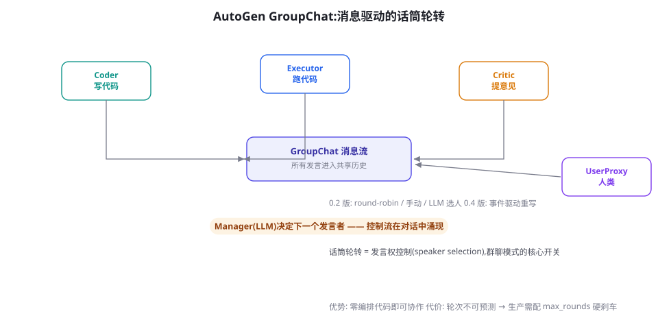

AutoGen / AG2：群聊式多智能体框架
AutoGen 是「让 Agent 开会」这个想法最成功的实现：Conversable Agent 抽象 + GroupChat 话筒轮转，用最少的概念支撑了最大的想象空间。本章讲清它的两层架构、0.4 版的事件驱动重构、以及群聊模式从原型到生产的完整取舍。
核心抽象：Conversable Agent 与两层架构
AutoGen（微软 2023，arXiv:2308.08155；社区延续版 AG2）的全部构建块是一个概念：Conversable Agent——每个 Agent = 「系统提示词 + 模型配置 + 工具集 + 人类输入模式」的可对话实体。Agent 之间唯一的交互方式是收发消息。在此之上是两种组合模式：双 Agent 对话（助手 Agent + 执行 Agent，后者常是「人类代理」UserProxy——代表人类执行代码或转达输入）与GroupChat 群聊（N 个 Agent 共享消息流，由 Manager 决定下一个发言者）。这个两层设计的聪明之处：所有复杂性都长在同一根「消息传递」的脊柱上——加角色、加流程、改发言规则，都不需要新概念。

import autogen # pip install pyautogen (或 ag2)
config = {"model": "gpt-4o-mini",
"api_key": "你的密钥"} # 生产中走环境变量
assistant = autogen.AssistantAgent(
name="coder",
system_prompt="你是严谨的工程师。写代码解决用户问题,"
"代码要自带测试输出。")
user_proxy = autogen.UserProxyAgent(
name="executor",
human_input_mode="NEVER", # ALWAYS/NEVER/TERMINATE
code_execution_config={
"work_dir": "sandbox", # 代码在此目录执行
"use_docker": True}, # 生产必须容器化(第60章)
is_termination_msg=lambda m: "TERMINATE" in m.get("content", ""))
user_proxy.initiate_chat(assistant,
message="写一个 Python 函数判断字符串是否为回文,并跑测试证明。")这十几行是 AutoGen 的灵魂：助手写代码 → 人类代理真的执行 → 执行结果回填对话 → 助手根据真实输出修正。「代码执行反馈循环」是 AutoGen 论文演示的核心能力，也是它区别于「纯聊天多 Agent」的地方——真实性来自环境反馈（第 16 章 ReAct 的多 Agent 版）。
GroupChat：发言权控制的四种姿势
群聊模式的关键开关是 speaker selection——「下一个谁说话」。AutoGen 提供的选项各有明确的性格：
| 方式 | 机制 | 性格 | 适用 |
|---|---|---|---|
| round_robin | 固定顺序轮流 | 呆板但可预测 | 流水线式 SOP（阶段固定） |
| manual | 人类每轮指定 | 可控但累 | 教学、演示、调试 |
| auto(LLM 选人) | Manager 用模型读上下文挑人 | 灵活但不确定 | 探索性协作、原型 |
| 自定义 | 传入选人函数 | 完全掌控 | 生产（配合规则与预算） |
groupchat = autogen.GroupChat(
agents=[coder, reviewer, tester, user_proxy],
messages=[],
max_round=20, # 硬刹车:总轮次上限
speaker_selection_method="auto", # 生产建议自定义函数
allow_repeat_speaker=False) # 禁止同一 Agent 连说
manager = autogen.GroupChatManager(
groupchat=groupchat,
llm_config=config)
user_proxy.initiate_chat(manager,
message="开发一个TODO命令行工具,要有测试。评审通过并测试全绿后结束。")群聊轨迹解剖：一场会开成什么样
看一次真实群聊的轨迹骨架（TODO 工具任务，有删节），学会诊断对话的「病」：
[1] user_proxy → 任务: 开发 TODO 命令行工具
[2] coder → (给出 80 行完整代码) ← 首轮就全量输出,自信
[3] executor → 执行结果: ModuleNotFoundError: No module named 'rich'
[4] coder → 修复: pip install rich,重跑
[5] executor → 执行结果: 3 个测试全部通过 ✓
[6] critic → 意见: 缺少删除功能的边界处理,建议补充空列表用例
[7] coder → 补充用例,重新给出完整代码 ← 整文件重发,历史快速膨胀
[8] executor → 全部通过 ✓
[9] critic → PASS,代码质量良好
[10] manager → 建议结束 (轮次 9/20)三个值得注意的模式。模式一：完整代码重发——每轮修改都是「重贴整份代码」，对话历史按平方膨胀；多轮之后上下文被代码占满，这是群聊成本的主要来源（对策：让 coder 只发 diff，或对历史做滚动裁剪）。模式二：批评者的「必须找点事」倾向——critic 在第 6 轮确实发现了问题，但也要警惕「为了显得有用而吹毛求疵」的轮次（诊断法：看批评是否可执行——「补充空列表用例」可执行，是好的；「建议提升代码质量」不可执行，是凑数）。模式三：收工依赖显式协议——第 10 轮的结束不是自然的，是 critic 说 PASS + manager 建议结束的合力；没有 PASS 协议的群聊会讨论到 max_round 才停。三个模式合起来给出群聊调优的顺序：先管历史膨胀（省钱），再管发言质量（省轮次），最后管终止协议（省命）。
「让 Agent 跑代码」是 AutoGen 的看家本领，也是最危险的开关。三条不可妥协的底线：必须容器化（use_docker=True 不是可选项——模型生成的代码会读写文件、发起网络请求）；资源与时长限额（失控循环能吃满主机）；产物隔离（执行目录即废弃区，不得挂载真实数据）。第 60 章的沙箱分层在此完全适用——UserProxyAgent 的代码执行配置就是你的第一道也是最硬的一道防线。
0.4 版重构：从「对话循环」到「事件驱动」
2024 年末的 0.4 版是一次伤筋动骨的重写，理解它的动机比记忆 API 更有价值。0.2 版的架构是「同步对话循环」——initiate_chat 一路阻塞跑到底，扩展（并行、流式、人工介入、分布式）全靠往循环里塞钩子，塞到团队自己都受不了。0.4 版改为「事件驱动 + Actor 模型」：每个 Agent 是独立 actor，一切交互是异步消息（发布/订阅），Runner 负责投递。代价是简单示例变啰嗦了（要声明消息类型与订阅关系）；收益是四类生产刚需变成了原生能力：并行（多个 agent 同时处理不同消息）、流式（token 级输出事件）、人机混编（人类作为订阅者随时插话）、分布式（agent 可跨进程/机器分布）。这个演化和第 24 章的结论互为印证：群聊适合原型探索，生产化时「控制流显式化」的压力会把框架推向事件驱动或图模型——AutoGen 自己也走到了这一步。AG2（社区 fork）则保持 0.2 式 API 的持续演进，两条线并存，选型时先确认你在哪条线上。
毕业实操：把一场群聊固化成结构化流程
第 24 章「先群聊后毕业」的方法论，这里给出完整的操作序列。第一步：采风。用 auto 模式跑 10 个真实任务，只记录不干预——重点观察三件事：实际出现了几种角色分工？发言顺序有什么规律？ termination 通常由谁触发？第二步：归纳状态机。把观察翻译成图：节点 = 角色，边 = 「A 发言后通常轮到 B」。10 个任务里稳定出现的边保留，偶发的边砍掉。第三步：固化。两种固化深度二选一——浅固化：speaker_selection_method 换成自定义函数，把归纳的顺序写成规则（仍是 AutoGen，可控性提升）；深固化：把角色映射为图节点迁往 LangGraph（控制流显式化，获得检查点与人审）。第四步：回归验证。用同一批 10 个任务跑固化版，对比成功率与成本——成功率不应下降（若下降说明归纳漏了关键模式），成本应显著下降（轮次可预测化）。四步走完，你经历的是一次完整的「涌现 → 结构化」工程循环，这个循环的价值远超任何单个框架的掌握。
成本算术：群聊的轮次经济学
群聊的成本模型比单 Agent 多一个「轮次分布」的维度。设单轮平均成本 c（随历史长度增长）、轮次随机变量 R，总成本 = c × E[R] × (1 + 历史膨胀因子)。三个杠杆对应三个因子：压 E[R]——明确的 termination 协议（PASS/TERMINATE 关键词 + is_termination_msg）能砍掉「礼貌性收尾轮次」；压单轮 c——历史裁剪（只保留最近 K 轮全文 + 更早轮的摘要）直接降低每轮输入；压膨胀因子——禁止整文件重发（要求 diff 格式）。实测中三招齐下常能把群聊成本压到一半以下，且成功率不降反升（历史短了，注意力反而集中）。把这个算术教给你的团队，成本优化的讨论就从「感觉贵」变成「哪个因子超标」。
AutoGen Studio 与生态周边
围绕核心库，AutoGen 生态有三个周边值得知道。AutoGen Studio：官方低代码界面——拖拽组建 Agent 团队、配置技能（工具）、跑会话看轨迹。它的定位与第 26 章低代码讨论一致：验证与演示的好手、生产的边界要清醒（同样受「毕业检查单」约束）。它有一个独特的教学价值：可视化地展示「会话轨迹」——初学者用它理解 GroupChat 的轮转机制，比读代码直观得多。AgentBench 式的教学案例库：官方仓库的 notebook 案例覆盖数学、检索、代码、游戏等场景，是「照着改」的最佳素材。与 Magentic-One 的关系：微软 2024 年发布的 Magentic-One 通用 Agent 系统构建在 AutoGen 之上（Orchestrator-worker 拓扑 + 任务账本），它是「AutoGen 也能搭出结构化系统」的官方示范——再次呼应本章结论：群聊是起点，结构化是归宿。
何时用 AutoGen：三个契合信号与三个警报
- 契合信号一：任务的本质是「试错-反馈」——写代码跑代码、查数据画图，环境反馈是质量来源（代码执行循环是它的看家本领）。
- 契合信号二：角色协作模式需要「边走边定」——你尚不确定几个角色、怎么分工，群聊让协作模式涌现出来（第 24 章「毕业模式」的探索期）。
- 契合信号三：研究与教学场景——它的论文引用量与教学采用率是框架里最高的，材料生态丰富。
- 警报一：你需要严格的流程合规——审计要求每个步骤可预测可复现 → 图框架或 SOP 流水线（第 33 章）更合适。
- 警报二：你的预算是硬约束——群聊的轮次不可精确预测，成本上限只能靠刹车「兜住」而非「设计出来」。
- 警报三：你需要细粒度的人机协同——interrupt/审批这类原语在图框架里是一等公民，在群聊里是补丁。
人机混编的三种姿势
AutoGen 对「人在环上」的支持比多数人以为的丰富，三种姿势覆盖不同介入深度。姿势一：UserProxy 作为人类化身（human_input_mode=ALWAYS）——每个关键轮次征求意见，适合教学与高风险验证；成本是人的耐心。姿势二：终结条件式介入——Agent 发出含特定标记的消息时暂停（is_termination_msg 或自定义），人处理后输入结论继续——这是「审批点」的朴素实现，粒度由标记协议决定。姿势三（0.4 版）：人类作为订阅者——注册为特定消息类型的处理器，随时观察并可插话，其余消息照常流转——这是最接近「会议旁听 + 举手发言」的模式，生产里的人机混编推荐这种。三姿势的选型与介入成本成正比：姿势一让每轮都等人，姿势三让人类像其他 Agent 一样只是消息流的一个节点。生产设计的通则：把人类的介入点显式建模为协议（什么消息触发、人看到什么、回复格式是什么），而不是靠「人在电脑前盯着」——第 25 章的审批工作队列在这里同样适用。
多 Agent 对话的质量评测：看什么指标
群聊的评测维度与单 Agent 不同，四条专用指标：任务成功率（终态产物是否达标——与单 Agent 相同的终点）；轮次效率（成功任务的平均轮次——同任务下轮次越少说明协作越高效；轮次方差大说明流程不稳定）；发言有效性（抽样标注每轮发言是「推进/重复/跑题/凑数」四类中的哪种，推进占比是协作质量的直接度量）；交接损耗（后一发言是否正确理解前一发言——错位率高的团队说明角色指令重叠）。这四条里最值得自动化的是发言有效性：用一个裁判模型（第 57 章）对每轮发言分类，成本可控且能逐轮定位协作退化点。当你调优群聊（改提示词、换选人策略）时，这四个数字就是你的仪表盘——比「感觉配合更默契了」可靠一百倍。
配置细节：llm_config 的讲究
AutoGen 的 llm_config 看似简单，生产配置有四处讲究。① 分角色配模型：llm_config 是 Agent 级的——coder 配旗舰、critic 配小模型是常见省钱组合；群聊 Manager 单独配置（它做选人，通常用便宜快的模型即可）。② seed 与温度：调试期给 llm_config 加 seed + temperature=0 能让轨迹可复现——群聊的随机性来源不只是模型采样，选人也是；两者都锁住，轨迹才真正可 diff。③ cache：0.2 支持磁盘缓存（cache_seed），开发期相同输入直接命中缓存，迭代提示词时省钱省时；生产期记得关（业务输入天然不同，缓存意义有限且有过期问题）。④ 超时与重试：在 config_client 里配置——群聊中一个 Agent 的 API 超时会阻塞整个话筒轮转，必须有兜底。这四处配齐，你的群聊才从「能跑的 demo」变成「可复现、可观测、可预算的实验对象」——群聊的一切调优都以可复现为前提。
常见坑清单
- 角色指令同质化：coder 与 reviewer 的系统提示词只差一句话，两人在群里互相客气——角色要有真正的视角差（工具集差异 > 提示词差异：让 reviewer 根本没有写代码的工具，批评才诚实）。
- human_input_mode 配错：ALWAYS 模式在生产里会卡死在等输入；TERMINATE 模式下人只看终局。理解三种模式的语义再选。
- 忘记 is_termination_msg：终止条件只靠 max_round，每次任务都跑满轮次——成本直接翻倍。终止协议要「自然终止 + 硬刹车」双保险。
- 接收者（recipient）默认全体：每条消息都广播给所有人，上下文平方膨胀；双聊场景明确指定接收者。
- 把 AutoGen 当应用框架：它是多 Agent 对话库，不是 Web 服务框架——API 层、鉴权、持久化请用常规后端工程解决，别在对话循环里硬塞。
GroupChat 的选人策略与人类会议的主持人艺术惊人同构。round_robin 是「按座次轮流发言」——公平但低效；auto(LLM 选人) 是「聪明主持人点名」——流畅但可能偏心（LLM 选人确实存在偏好特定 Agent 的系统性偏差，观察你的轨迹统计就能发现）；自定义函数是「罗伯特议事规则」——程序正义优先。更进一步，人类会议的三个有效技巧在群聊里同样有效：限时发言（单轮 token 上限，防长篇大论）；议题聚焦（每轮消息开头重申当前子目标，防跑题）； minority report（允许少数派意见进入记录，防过早收敛——给 critic 一个「异议必须被书面回应」的规则）。框架会演进，但会议的艺术是永恒的工程素材。
两个高频疑问
Q：AG2 和微软 AutoGen 该用哪个？2024 年项目治理变化后出现双线：微软线（microsoft/autogen，0.4 事件驱动重写）与社区线（AG2，延续 0.2 API）。判断依据是生态依赖与时间线：要事件驱动、分布式能力 → 微软 0.4+；已有 0.2 代码资产、要平滑演进 → AG2；新项目从零开始 → 两者都评估，重点对比你需要的集成（工具、观测）在各自线的成熟度。这个「上游分叉」本身就是开源治理的活教材——依赖任何明星项目前，把治理结构（谁维护、谁资助、社区活跃度）列入尽调。
Q：群聊里该放几个 Agent？实证建议 3~5 个（含 UserProxy）。超过 5 个的典型病症：选人错误的概率上升（LLM 在更多候选人里挑错）、单轮历史更长、真正的「独立视角」并没有增加（角色开始同质化）。任务真的需要更多角色时，考虑两级结构—— subgroup 拆分或迁移到图框架的子图模式，而不是往一个聊天室里塞人。
关于「为什么是群聊」的一个理论脚注：AutoGen 选择对话作为协作界面，并非只是直觉，背后有一条成立的论证——自然语言是当前 LLM 唯一精通的通用接口。图框架的 State Schema、函数调用的参数结构，本质都是「结构化接口」，它们精确但狭窄；而对话是最大带宽的接口——任何上下文、任何意图、任何中间状态都能被语言承载。群聊用「接口带宽」换了「结构保障」，这个交换在探索期是划算的（你不知道该定什么结构），在生产期则要看任务对哪一头更敏感。这个视角也解释了为什么 AutoGen 0.4 会向事件与类型化消息靠拢——当协作模式被理解后，带宽的剩余部分就可以用结构来交换确定性。框架的演进方向，就是这条「带宽-结构」交换曲线上的移动轨迹。
练习收尾：跑通本章的双 Agent 代码后，做一次「角色改造实验」——把 reviewer 的工具集清空（它只能读对话不能执行任何东西），对比改造前后的评审质量。多数人会观察到：没有执行能力的批评者反而更挑剔、更聚焦于逻辑而非「帮忙改代码」。这个小实验是第 24 章「视角独立」原理的最小复现——群体智能不来自人数，来自真正的视角分离。
教学视角：为什么 AutoGen 是学多 Agent 的最佳起点
即使你的生产选型最终不是 AutoGen，它仍值得作为多 Agent 的入门第一站，理由有三。其一，概念负担最小：一个 Conversable Agent 走天下，没有 Schema、没有图定义、没有订阅声明——你可以在十分钟内跑起第一场「Agent 会议」，把注意力留给观察现象而非配置语法。其二，现象最裸露：群聊的轨迹就是一切优点与问题的直接呈现——霸麦、跑题、互相客气、终止困难——你在别的框架里被抽象层掩盖的协作病理，在这里全部可见。先在裸露环境里学会诊断，再到结构化框架里就能预判问题。其三，与第 24 章互文最深：本章的每一个现象（话筒轮转、历史膨胀、终止协议）都在那一章有理论对应——两章合读，多 Agent 的「实践现象」与「设计原理」就闭环了。建议的学习顺序：本章跑通并观察 → 回读第 24 章理论 → 再进入第 32 章看「角色分工的工程化」如何收敛群聊的自由度。
关于本章内容的一个历史注脚作为结束：AutoGen 论文（2023.8）与 MetaGPT（2023.8）、CAMEL（2023.3）几乎同期出现，共同定义了「多 Agent 框架」这个品类。三年后回看，CAMEL 的「角色扮演双 Agent」演化为指令生成技术，MetaGPT 的「SOP 流水线」演化为结构化协作范式（第 33 章），而 AutoGen 的「自由对话 + 可执行反馈」演化为两条产品线（0.2 社区线与 0.4 事件线）。三者共享的底层判断——多 Agent 的价值必须锚定在真实环境反馈上，否则退化为昂贵的角色扮演——经受住了时间检验，也再次印证本书反复出现的主题：环境真实性是 Agent 一切能力的最终来源。
另一个常被问到的对比：AutoGen 的双 Agent 模式与第 16 章 ReAct 单 Agent 的界限在哪？形式上都是「模型↔环境」循环，区别在「执行者」的身份：ReAct 里执行者是确定性代码（工具函数），AutoGen 双聊里执行者是「被提示词约束的模型」（UserProxy 的行为受 human_input_mode 与注册技能控制）。这个差异带来行为分布的不同：代码执行者严格可预测、能力上限固定；模型执行者灵活、可能误解任务。生产含义：能写成确定性工具的，写成工具；只有真正需要「理解-决策」的执行环节，才值得用 Agent 担任。「执行者该是代码还是 Agent」是架构评审时最有生产力的问题之一——它逼着团队区分「自动化」与「智能化」的边界，而这条边界直接决定成本、可靠性与可测性。
最后是一点阅读建议：本章与下一章（CrewAI）构成一组「自由 vs 结构」的对照，建议连读。读 CrewAI 时请随时带着一个问题——「它在替我省什么、又收走了我什么」——这个问题的答案会让你对两个框架的适用边界形成肌肉记忆，比任何对比表格都持久。
用第 3 章的「Agent 四判据」检验 GroupChat：模型驱动决策 ✓（选人与发言都是模型/规则）、环境闭环 ✓（代码执行反馈）、工具使用 ✓、任务级自主——取决于 termination 协议的松紧。有意思的是第四条：群聊的「自主」是集体性的，单个 Agent 往往被设计得只做一件事（窄自主），系统整体的宽自主来自协作。这提示了自主性的一种分布视角——它不必集中在单个实体，也可以是分工的涌现性质。这个视角对理解人类组织同样成立。
如果只带走一句话：AutoGen 教给我们的是「对话即控制流」的完整可能性——它的自由是真的自由，它的代价也是真的代价；学会在自由与结构之间为每个任务选点，是多 Agent 工程师的成年礼。
另外两条速记：自定义选人函数的签名收到「全部发言历史」，返回下一个发言者的名字——这是插入领域规则（如「测试没过不许交给 critic」）的天然挂点；而 max_consecutive_auto_reply 控制单个 Agent 的自动回复上限，防止两个 Agent 陷入二重唱。这两个参数加上 max_round，构成群聊的「三道闸」，生产配置缺一不可。
补充一个跨章速查：本章的群聊调试技巧（轨迹诊断、轮次统计、终止协议检查）与第 79 章的可观测性体系完全兼容——把 GroupChatManager 的消息回调接到你的 trace 管道，群聊的每一轮就都进入了标准观测体系，四指标评测也能自动化采集。
本章小结
- Conversable Agent 单一抽象 + 双层组合（双聊/群聊）：所有复杂性长在消息传递的脊柱上。
- 代码执行反馈循环是看家本领：环境真实性是多 Agent 对话的质量来源。
- 发言权控制四方式：生产用自定义选人函数 + max_rounds 硬刹车。
- 0.4 版事件驱动重构的动机：同步对话循环无法承载并行/流式/人机/分布式四类生产刚需。
- 使用判据：试错反馈型任务与探索期用 AutoGen；流程合规与硬预算场景换图或 SOP。
- 成本三杠杆：termination 协议压轮次、历史裁剪压单轮、diff 化压膨胀——齐下可省一半。
自测题
- 用第 24 章的拓扑分类，GroupChat 属于哪一种？它的「话筒轮转」对应图框架里的什么概念？
- 为什么「代码执行反馈」比「互相评审」更能提升多 Agent 输出质量？用环境反馈的语言回答。
- 0.2 的对话循环在「两个人类用户同时插话」时会怎样？0.4 的事件模型如何解决？
- 为你的一个真实任务判断：契合信号与警报各命中几条？最终选择哪条路线？
参考文献与延伸阅读
- Wu, Q. et al. (2023). AutoGen: Enabling Next-Gen LLM Applications via Multi-Agent Conversation. arXiv:2308.08155
- AG2 社区 (2024). AG2 文档（原 pyautogen 社区延续）. ag2.ai; github.com/ag2ai/ag2
- Microsoft (2024). AutoGen 0.4 发布说明：事件驱动重构. microsoft.github.io/autogen
- Microsoft (2024). AutoGen Studio（低代码界面）. 官方文档